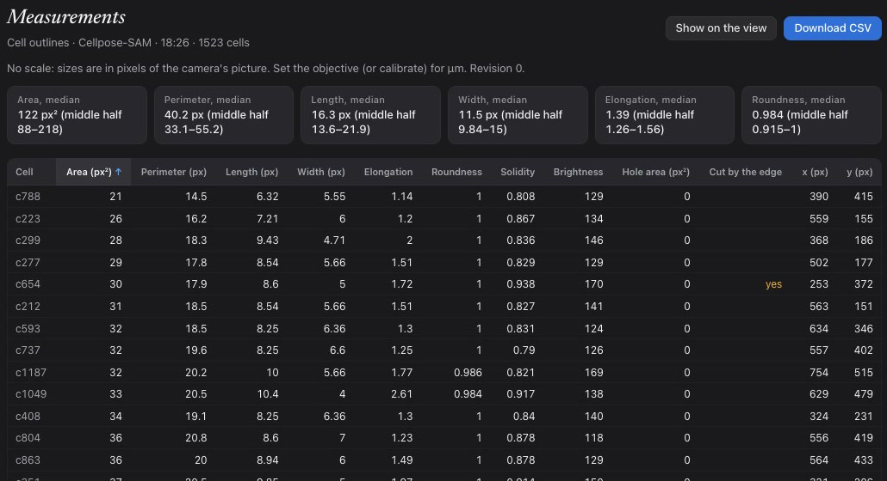

Compare models
Outline or segment the same view with two or more models and see their results and overlap measured side by side.
Preview. The first release is not out yet.
Image analysis at the speed new models arrive.
An open-source platform for finding, turning on and running the hundreds of models in microscopy and bioimage analysis, with new ones published every week. Run them on your camera, recordings or images, and compare them on the same specimen. No terminal, no broken environments.
Apple silicon only. The signed download will be available with the first release.
A recording of a stained plant stem, opened in HookeUI. One click outlines the pith and names it; the chat answers a question about the view. Real time.
Browse the catalog, paste a BioImage Model Zoo or Hugging Face link, or add a Fiji function or one a colleague shared.
One action: Download for a model that runs on your Mac, Add key for a cloud model. A model with its own code gets its own environment, checked before use.
Click, run it from Actions, or ask for it in plain language. Run several on the same view and compare them side by side.
Outline or segment the same view with two or more models and see their results and overlap measured side by side.
Add a model once and share it as a file or publish it to the catalog. Others get it as an update, with no new app release.
Each result records the model, version and settings that made it, so a result can be repeated.
Outline anything with a click, or segment every cell and get per-cell measurements as CSV.
Follow a moving object, or measure the speed of everything moving with the slide’s motion removed.
Sessions are saved on your Mac. Cloud models are optional and use your own API key.
Try an example opens a microscope image of human cells, finds the bright regions with a basic local method (Otsu threshold) and opens their measurements.
It needs no account, API key, model download or camera. A bright region is not necessarily one cell; the example shows how results are kept, not biological accuracy.
Image: human mitosis, David Root, CC0, via scikit-image.
Recorded in HookeUI on recordings from a real microscope.
One click outlines the cell with EdgeTAM. The outline follows it and its path is drawn with its length. Without a calibrated scale, distances are in pixels.
Sperm wet mount. The name is a vision model’s best guess, marked “Probably” until confirmed.
Cellpose-SAM outlined 1,523 cells in this view in about 20 seconds on an Apple silicon Mac. Each cell is measured by the app’s own code.
Stained plant stem section. Clip shortened while the model ran.

Their measurements, sortable, with Download CSV. Sizes are in pixels until an objective or calibration is set.
Asked “How fast are they swimming?”, the app tracked moving spots over 4 seconds: 527 tracked, 153 actively swimming, median net speed 13 px/s, in pixels because no scale was set.
Asked earlier while the slide was drifting, it said it could not measure and why.
HookeUI runs established models and tools. Each keeps its own licence, shown before it is turned on. Please cite the ones you use.
A BioImage Model Zoo or Hugging Face link, or your own trained Cellpose model.
A model with its own code installs into its own locked Python environment, so installs don’t conflict.
Weights are pinned to a revision and checked by size and hash. They download only when you choose.
Apache 2.0 for HookeUI’s own code, with a Developer Certificate of Origin sign-off. Being finalised for the first release.
Each result records the model, version and settings that made it. Shared images list what made them.
Models, examples, corrections and documentation. The forum opens with the first release.
HookeUI is developed with AI coding assistants. It is named after Robert Hooke, whose Micrographia (1665) recorded what he saw through his microscope.
| System | macOS on Apple silicon |
|---|---|
| Without a key | The example and local models |
| With a key | Chat, voice and naming via a cloud provider |
git clone https://github.com/wpulier/HookeUI
cd HookeUI
make setup
make startAvailable when the repository is published with the first release.